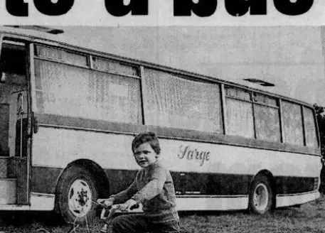

(advertisement)
… Lewis Road Llandough … acres of Prime Residential Building Land For Sale by Private Treaty …
BP Properties Ltd
Source
South Wales Echo, 9 November 1989 (British Newspaper Archive search-result text). Legal Wiki EV-0270.
1989 · 13 key events, newest first.
… Lewis Road Llandough … acres of Prime Residential Building Land For Sale by Private Treaty …
South Wales Echo, 9 November 1989 (British Newspaper Archive search-result text). Legal Wiki EV-0270.
to the South Wales Echo
“They have taken everything from me and my family. I have lost my livelihood.”
SOUTH Wales farmer Billy Buckler, whose home was demolished last year after a 40-year-old row over ownership, now plans to live in an old bus which he is converting into a mobile home.

Now I’ve got to start from scratch again.
…nitely. I have three children and my wife is expecting a baby. My sister cannot be expected to put up with that. I shall just have to start from scratch. They have taken everything from me and my family. I have lost my livelihood.
South Wales Echo, 1989 (exact date not identified; partial copy). Legal Wiki EV-0112 · GHF-E090-N13.
Decision on application 14464/88
Application declared inadmissible: the fair-trial complaint was not substantiated; the loss of the home was lawful and justified to protect the owner’s rights; there was no “possession” in law because the courts held the property belonged to another.
Cadw records 13430 (Pound Cottage) and 13431 (the former National School and School-house) carry the designation date 6 April 1989, “Original list description of 1989”; 13432, the Church of St Dochdwy, 4 June 1989. Cadw wrote on 21 May 2026 that Great House Farm and the barn were “assessed and rejected for listing in the 1988 community survey of Llandough”.
Cadw / Cof Cymru full reports 13430, 13431, 13432 (read 20 Oct 2026); Cadw letter of 21 May 2026. Legal Wiki EV-0272.
FARMER BILLY Buckler vowed to continue his fight over the loss of his historic family home and more than 70 acres of land […]
I will fight on to the death.
“I will fight on to the death.”
24 Mar 1989 · to the South Wales Echo · sourceSouth Wales Echo, Friday 24 March 1989 (British Newspaper Archive search extract). Legal Wiki EV-0121 · GHF-E090-N15-16.
A FARMER who lost his family home at Great House Farm, Llandough, when the premises were demolished at the end of last year today admitted two […]
South Wales Echo, Thursday 23 March 1989 (British Newspaper Archive search extract). Legal Wiki EV-0120 · GHF-E090-N15-15.
[…] to the ground by BP Properties following a 30 year legal battle over ownership between the company and farmer Mr Billy Buckler. The lorries moved onto the site at 7.30am today and the operation is likely to take several days. Mr Buckler has been unable to […]

South Wales Echo, Monday 20 March 1989 (British Newspaper Archive search extract). Legal Wiki EV-0119 · GHF-E090-N15-14.
The Echo reported that Barry magistrates committed William (Billy) Buckler, formerly of Great House Farm, for trial at Cardiff Crown Court on charges arising from the events at the farm on 1 November 1988.
“…stand trial”
The Echo reported that Vale of Glamorgan councillors authorised legal action against BP Properties over the demolition at Great House Farm.
“Vale councillors authorise legal action against BP Properties over demolition”
The Echo reported that the Crown Prosecution Service withdrew a public-order charge against William (Billy) Buckler at Barry magistrates’ court; a bail condition on the remaining charges kept him half a mile from the Great House Farm site.
“court report on William (Billy) Buckler”
AN [ACCUSATION] that South Wales farmer Billy Buckler used threatening words and behaviour at his former home last year was withdrawn by the Crown Prosecution Service at Barry magistrates court yesterday.
Cutting, newspaper not identified; January 1989 (hearing “yesterday”, next appearance 3 February). Legal Wiki EV-0115 · GHF-E090-N12.
EVICTED South Wales farmer Billy Buckler, whose Llandough house was demolished late last year, has had bail conditions changed on charges of assault, [damage to property] and wanton or furious driving. Buckler, aged 40 […]
South Wales Echo, Friday 6 January 1989 (British Newspaper Archive search extract). Legal Wiki EV-0116 · GHF-E090-N15-13.